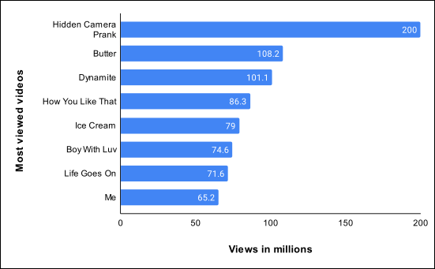
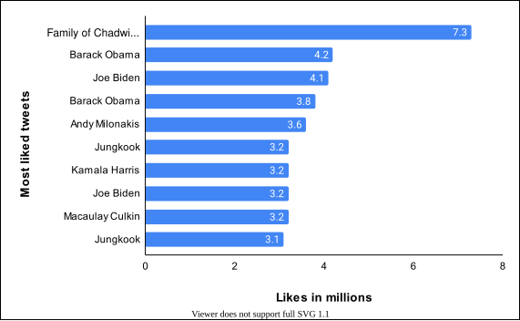
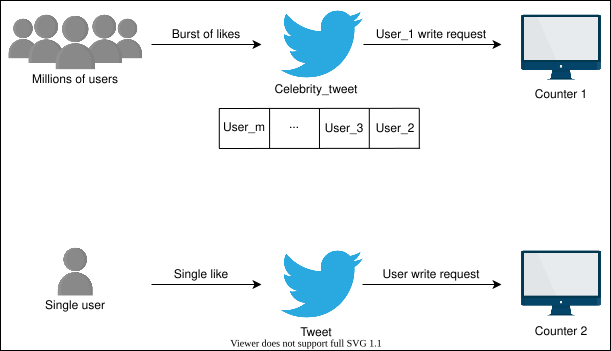
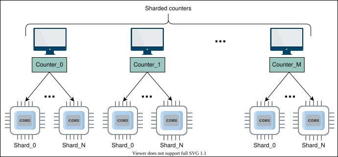
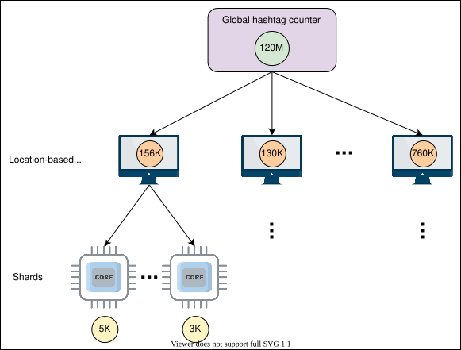

24. Sharded Counters
System Design: The Sharded Counters
System Design: The Sharded Counters
Get introduced to sharded counters.
We'll cover the following
Problem statement#
Real-time applications like Facebook, Twitter, and YouTube have high user traffic. Users interact with the applications and perform multiple operations (view, like, comment, and so on) depending on the application’s structure. For instance, an image is posted on a Facebook page that has millions of followers, and the post’s likes rapidly increase after each millisecond. Here, it might be easy to count the likes for this single image, but what will we do when thousands of such images or videos are uploaded simultaneously by many celebrities, each with millions of followers. This problem is known as the heavy hitters problem.
The above scenario shows how a simple counting operation becomes challenging to manage with precision and performance. The following figure shows YouTube’s videos that were viewed by millions of users in a 24-hour span in August 2021:

On average, six thousand tweets are sent on Twitter within one second, which equals 360,000 tweets per minute and about 500 million tweets per day. A challenging task is to handle billions of likes on these 500 million tweets per day. The following table shows the most liked tweets in one day as of 2022:

How will we handle millions of write requests coming against the likes on thousands of tweets per minute? The challenge is that writing takes more time than reading, and concurrent activity makes this problem harder. As the number of concurrent writes increases for some counter (which might be a variable residing in a node’s memory), the lock contention increases non-linearly. After some point, we might spend most of the time acquiring the lock so that we could safely update the counter.
How will we design sharded counters?#
We have divided the design of sharded counters into three lessons:
- High-level Design: We’ll discuss the high-level design of sharded counters in this lesson. In addition, we’ll also briefly explain the API design.
- Detailed Design: This lesson will dive deeply into the design of sharded counters. Moreover, we’ll also evaluate our proposed design.
- Quiz: We’ll review major concepts of sharded counters design with a quiz.
Let’s begin with the high-level solution sketch of sharded counters.
High-level Design of Sharded Counters
High-level Design of Sharded Counters
Let's understand and design sharded counters.
We'll cover the following
High-level solution sketch#
Managing millions of tweet likes requires many counters operating on many nodes. To manage these counters, we need an efficient system that can provide high performance and scalability as the number of users grows.
What will happen when a single tweet on Twitter gets a million likes, and the application server receives a write request against each like to increment the relevant counter? These millions of requests are eventually serialized in a queue for data consistency. Such serialization is one way to deal with concurrent activity, though at the expense of added delay. Real-time applications want to keep the quality of experience high by providing as minimum as possible latency for the end user.
Let’s see the illustration below to understand this problem:

A single counter for each tweet posted by a celebrity is not enough to handle millions of users. The solution to this problem is a sharded counter, also known as a distributed counter, where each counter has a specified number of shards as needed. These shards run on different computational units in parallel. We can improve performance and reduce contention by balancing the millions of write requests across shards.
First, a write request is forwarded to the specified tweet counter when the user likes that tweet. Then, the system chooses an available shard of the specified tweet counter to increment the like count. Let’s look at the illustration below to understand sharded counters having specified shards:

In the above illustration, the total number of shards per counter is (N+1). We’ll use an appropriate value for N according to our needs. Let’s discuss an example to understand how sharded counters handle millions of write and read requests for a single post.
Let’s assume that a famous YouTube channel with millions of subscribers uploads a new video. The server receives a burst of write requests for video views from worldwide users. First, a new counter initiates for a newly uploaded video. The server forwards the request to the corresponding counter, and our system chooses the shard randomly and updates the shard value, which is initially zero. In contrast, when the server receives read requests, it adds the values of all the shards of a counter to get the current total.
We can use a sharded counter for every scenario where we need scalable counting (such as Facebook posts and YouTube videos).
API design for sharded counters#
This section discusses the APIs that will be called for sharded counters. Our API design will help us understand the interactions between sharded counters and their callers. To make our discussion concrete, we’ll discuss each API function in the context of Twitter. Let’s develop APIs for each of the following functionalities:
- Create counter
- Write counter
- Read counter
Although the above list of API functions is not exhaustive, they represent some of the most important ones.
Create counter#
The \createCounter API initializes a distributed counter for use. The \createCounter API is given below:
createCounter(counter_id, number_of_shards)
Parameter | Description |
| It represents the unique ID of the counter. The caller of this API can use a sequencer to get a unique identifier. See the lesson on sequencer building blocks for more details. |
| It specifies the number of shards for the counter. |
We can use an appropriate data store to keep our metadata, which includes counter identifiers, their number of shards, and the mapping of shards to physical machines.
Let’s consider Twitter as an example to understand how an application uses the above API. The \createCounter API is used when a user posts something on social media. For instance, if a user posts a tweet on Twitter, the application server calls the \createCounter API. The content_type parameter is the post type that the system uses to decide the number of counters that need to be created. For example, the system needs a view counter only if the tweet contains a video clip.
To find an appropriate value for number_of_shards, we can use the following heuristics:
- The
followers_countparameter denotes the followers’ count of the user who posts a tweet. - The
post_typeparameter specifies whether the post is public or protected. Protected tweets are for the followers only, and in this case, we have a better predictor of the number of shards.
Write counter#
The \writeCounter API is used when we want to increment (or decrement) a counter. In reality, a specific shard of the counter is incremented or decremented, and our service makes that decision based on multiple factors, which we’ll discuss later. The \writeCounter API is given below:
writeCounter(counter_id, action_type)
Parameter | Description |
| It is the unique identifier (provided at the time of counter creation). |
| It specifies the intended action (increment or decrement value of the counter). We extract the required information about the counter from our data store. |
In our Twitter example, the \writeCounter API is used when users act (by liking, replying, and so on) on someone else’s post or their own post.
Read counter#
The \readCounter API is used when we want to know the current value of the counter. Our system fetches appropriate information from the datastore to collect value from all shards. The \readCounter API is given below:
readCounter(counter_id)
Parameter | Description |
| It is the unique identifier (provided at the time of counter creation). For Twitter, the The |
The \readCounter API is called when users want to see the number of likes or view counts on a specific tweet. Usually, this API is triggered by another API when users want to see their home or user timeline.
The following section will discuss what happens in the back-end system when all the above APIs are called.
Detailed Design of Sharded Counters
Detailed Design of Sharded Counters
Learn about the design of sharded counters in detail.
We'll cover the following
Detailed design#
We’ll now discuss the three primary functionalities of the sharded counter–creation, write, and read–in detail. We’ll answer many important questions by using Twitter as an example. These questions include:
- How many shards should be created against each new tweet?
- How will the shard value be incremented for a specific tweet?
- What will happen in the system when read requests come from the end users?
Sharded counter creation#
As we discussed earlier, when a user posts a tweet on Twitter, the \createCounter API is called. The system creates multiple counters for each newly created post by the user. The following is the list of main counters created against each new tweet:
- Tweet like counter
- Tweet reply counter
- Tweet retweet counter
- Tweet view counter in case a tweet contains video
Now, the question is how does the system decide the number of shards in each counter? The number of shards is critical for good performance. If the shard count is small for a specific write workload, we face high write contention, which results in slow writes. On the other hand, if the shard count is too high for a particular write profile, we encounter a higher overhead on the read operation. The reason for slower reads is because of the collection of values from different shards that might reside on different nodes inside geographically distributed data centers. The reading cost of a counter value rises linearly with the number of shards because the values of all shards of a respective counter are added. The writes scale linearly as we add new shards due to increasing requests. Therefore, there is a trade-off between making writes quick versus read performance. We’ll discuss how we can improve read performance later.
The decision about the number of shards depends on many factors that collectively try to predict the write load on a specific counter in the short term. For tweets, these factors include follower count. The tweet of a user with millions of followers gets more shards than a user with few followers on Twitter because there is a possibility that their tweets will get many, often millions, of likes. Sometimes, a celebrity tweet includes one or more hashtags. The system also creates the sharded counter for this hashtag because it has a high chance of being marked as a trend.
Many human-centered activities often have a long-tailed activity pattern, where many people are concentrated on a relatively small set of activities. Perhaps shortened attention spans might be playing a role here. It means that after some time, the flurry of likes will die down, and we might not need as many shards now for a counter as were once needed. Similarly, our initial prediction for future writes might turn out to be wrong, and we might need more shards to handle write requests. We require that our system can dynamically expand or shrink the number of shards based on the current need.
We need to monitor the write load for all the shards to appropriately route requests to specific shards, possibly using load balancers. Such a feedback mechanism can also help us decide when to close down some of the shards for a counter and when to add additional shards. This process does not only provide good performance for the end user but also utilizes our resources at near-optimal levels.
Point to Ponder
Question
What happens when a user with just a few followers has a post go viral on Twitter?
Burst of writes requests#
As we mentioned earlier, millions of users interact with our example celebrity’s tweet, which eventually sends a burst of write requests to the system. The system assigns each write request to the available shards of the specified counter of the particular tweet. How does the system select these shards operating on different computational units (nodes) to assign the write requests? We can use three approaches to do this:
Round-robin selection#
One way to solve the above problem is to use a round-robin selection of shards. For example, let’s assume the number of shards is 100. The system starts with shard_1, then shard_2, and continues until it reaches shard_100. Usually, round-robin work allocation either overloads or underutilizes resources because scheduling is done without considering the current load conditions. However, if each request is similar (and roughly needs the same time to serve), a round-robin approach can be used and is attractive for its simplicity.
In the following illustrations, we assume that user requests are first handed out to an appropriate server by the load balancer. Then, each such server uses its own round-robin scheduling to use a shard:
Random selection#
Another simple approach can be to uniformly and randomly select a shard for writing. The challenge with both round-robin selection and random selection is with variable load changes on the nodes (where shards are hosted). It is hard to appropriately distribute the load on available shards. Load variability on nodes is common because a physical node is often being used for multiple purposes.
Metrics-based selection#
The third approach is shard selection based on specific metrics. For example, a dedicated node (load balancer) manages the selection of the shards by reading the shards’ status. The below slides go over how sharded counters are created:
Manage read requests#
When the user sends the read request, the system will aggregate the value of all shards of the specified counter to return the total count of the feature (such as like or reply). Accumulating values from all the shards on each read request will result in low read throughput and high read latency.
The decision of when the system will sum all shards values is also very critical. If there is high write traffic along with reads, it might be virtually impossible to get a real current value because by the time we report a read value to the client, it will have already changed. So, periodically reading all the shards of a counter and caching it should serve most of the use cases. By reducing the accumulation period, we can increase the accuracy of read values.
Point to Ponder
Question
Can you think of a use case where sharded counters with the above-mentioned consistency model might not be suitable?
Using sharded counters for the Top K problem#
This section will discuss how we can use sharded counters to solve a real-world problem known as the Top K problem. We’ll continue to use the real-time application Twitter as an example, where calculating trends is one of the Top K problems for Twitter. Here, K represents the number of top trends. Many users use various hashtags in their tweets. It is a huge challenge to manage millions of hashtags’ counts to show them in individual users’ trends timelines based on their locality.
The sharded counter is the key to the above problem. As discussed earlier, on Twitter, the system creates the counters for each hashtag and decides the shard count according to the user’s followers who used the hashtag in the tweet. When users on Twitter use the same hashtag again in their tweet, the count maintains the same counter created initially on the first use of that hashtag.
Twitter shows trends primarily based on the popularity of the specific hashtag in a user’s region. Twitter will maintain a separate counter for each discussed metric with a global hashtag counter. Let’s discuss each of the metrics below:
- Region-wise hashtag count indicates the number of tweets with the same hashtag used within a specific geographical region. For example, thousands of tweets with the same tags from New York City suggest that users in the New York area may see this hashtag in their trends timeline.
- A time window indicates the amount of time during which tweets with specific tags are posted.

Below is more detail on the above illustration:
- The global hashtag counter represents the total of all location-based counters.
- Location-based counters represent their current count when the system reaches the set threshold in a specified time and the hashtag becomes a trend for some users. For example, Twitter sets 10,000 as a threshold. When location-based hashtag counts reach 10,000, Twitter shows these hashtags in the trends timeline of the users of the respective country where the hashtag is being used. The specified hashtag may be displayed worldwide if counts increase in all countries.
Next, we’ll discuss Top K tweets in a user’s homepage timeline. The Top K tweets include accounts the user is following, tweets the user has liked, and retweets of accounts the user follows. Tweets get priority in Top K problems based on follower count and time. Twitter also shows promoted tweets and some tweets of accounts the user doesn’t follow in the user’s home timeline, depending on the tweet’s popularity and location.
Note: Twitter also uses other metrics to optimize Top K selection, but we’ve discussed the leading metrics here.
Placement of sharded counters#
An important concern is where we should place shared counters. Should they reside on the same nodes as application servers, in separate nodes in the data center, in nodes of CDN at the edge of a network near the end users? The exact answer to this question depends on our specific use case. For Twitter, we can compute counts by placing sharded counters near the user, which can also help to handle heavy hitter and Top K problems efficiently.
Quiz
Question
Should we lock all shards of a counter before accumulating their values?
Reads can store counter values in appropriate data stores and rely on the respective data stores for read scalability. The Cassandra store can be used to maintain views, likes, comments, and many more counts of the users in the specified region. These counts represent the last computed sum of all shards of a particular counter.
When users generate a timeline, read requests are forwarded to the nearest servers, and then the persisted values in the store can be used to respond. This storage also helps to show the region-wise Top K trends. The list of local Top K trends is sent to the application server, and then the application server sorts all the lists to make a list of global Top K trends. Eventually, the application server sends all counters’ details to the cache.
We also need storage for the sharded counters, which store all information about them with their metadata. The Redis or Memcache servers can play a vital role here. For example, each tweet’s unique ID can become the key, and the value of this key can be a counter ID, or a list of counters’ IDs (like counter, reply counter, and so on). Furthermore, each counter ID has its own key-value store where the counter (for example, a likes counter) ID is a key and the value is a list of assigned shards.
The job of identifying the relevant counter and mapping all write requests to the appropriate counter in sharded counters can be done in parallel. We map the all-write request to the appropriate counter, and then each counter chooses a shard randomly based on some metrics to do increments and decrements. In contrast, we reduce periodically to aggregate the value of all shards of the particular counter. Then, these counter values can be stored in the Cassandra store. The slides below help illustrate these points:
Evaluation of the sharded counters#
This section will evaluate the sharded counters and explain how sharded counters will increase performance by providing high availability and scalability.
Availability#
A single counter for any feature (such as like, view, or reply) has a high risk of a single point of failure. Sharded counters eliminate a single point of failure by running many shards for a particular counter. The system remains available even if some shards go down or suffer a fault. This way, sharded counters provide high availability.
Scalability#
Sharded counters allow high horizontal scaling as needed. Shards running on additional nodes can be easily added to the system to scale up our operation capacity. Eventually, these additional shards also increase the system’s performance.
Reliability#
Another primary purpose of the sharded counters is to reduce the massive write request by mapping each write request to a particular shard. Each write request is handled when it comes, and there is no request waiting in the queue. Due to this, the hit ratio increases, and the system’s reliability also increases. Furthermore, the system periodically saves the computed counts in stable storage—Cassandra, in this case.
Conclusion#
Nowadays, sharded counters are a key player in improving the overall performance of giant services. They provide high scalability, availability, and reliability. Sharded counters solved significant issues, including the heavy hitters and Top K problems, that are very common in large-scale applications.
Quiz on the Sharded Counters' Design
Quiz on the Sharded Counters' Design
Test your understanding of the concepts related to the sharded counters via a quiz.
What kind of problem would occur if our system created a counter with a few shards for a post from a user with one million followers?
A)
High read contention
B)
High write contention
C)
Users face delays on a read request
D)
Users get a quick response on the liked post